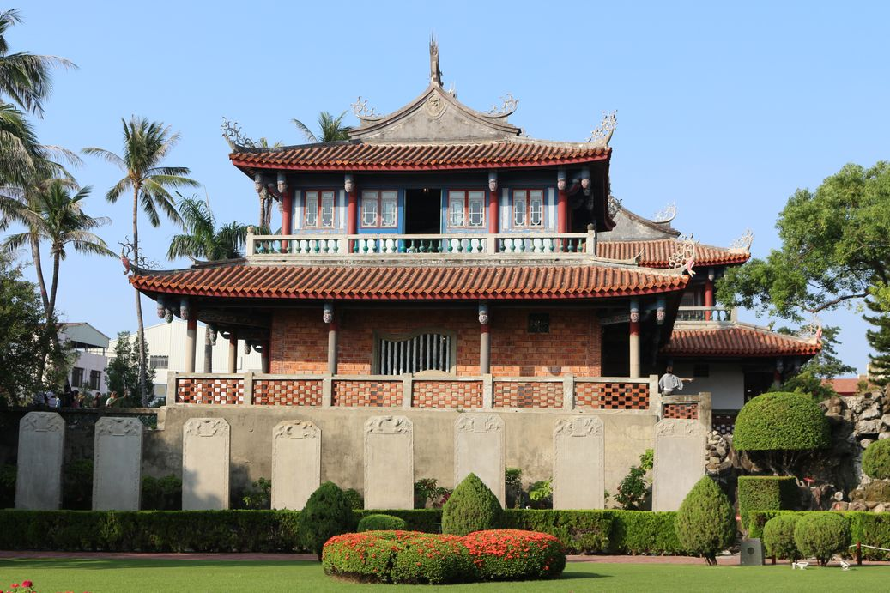

景點介紹
赤嵌樓（臺灣話：Tshiah-Khàm-Lâu），又作赤崁樓，位於臺灣臺南市中西區。前身為1653年荷治時期於赤崁行省興建之歐式城塞，又稱「普羅民遮城」（Provintia，意謂省城），在地人稱為「番仔樓」（臺灣話：Huan-á-lâu），曾為全台灣島的商業中心，至清代已傾圮，僅留部分殘蹟。 今日所見的赤嵌樓，大部分是漢人在荷蘭城堡之上，陸續興建的儒、道廟宇，包括海神廟、文昌閣。1960年，又由大南門城內遷來九座贔屭碑，終成今日樣貌。因此，所稱赤嵌樓，是歐式普羅民遮城殘蹟，以及海神廟、文昌閣的混合體。今列為國定古蹟。
